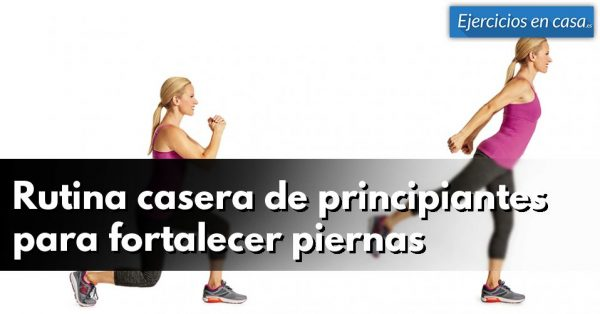
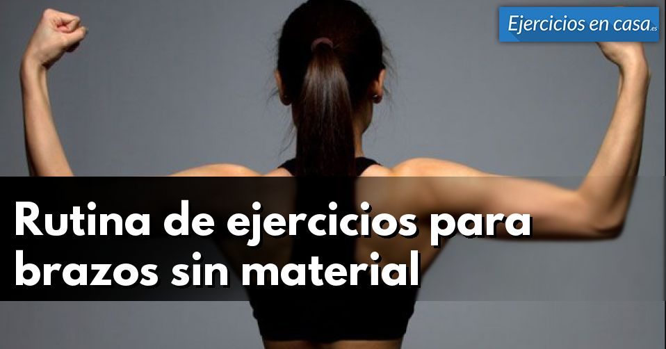

También en Ejercicios en casa
Sistema de entrenamiento …
Sistema de entrenamiento alemán de volumen 3.9 (77.5%) 8 votes …

Rutina casera de principiantes para …
Rutina casera de principiantes para fortalecer piernas 5 (100%) 2 votes …
Rutina de 12 semanas para mejorar tu …
Rutina de 12 semanas para mejorar tu condición física 5 (100%) 3 votes …
Entrenamiento para ganar masa …
Entrenamiento para ganar masa muscular en 10 semanas 4.8 (95%) 4 …

Rutina de ejercicios para brazos sin …
Rutina de ejercicios para brazos sin material 3.7 (74.55%) 11 votes …
Entrenamiento de CR7
Entrenamiento de CR7 3 (60%) 19 votes (60%)votes Hoy en día, es extraño …
Sé el primero en comentar.